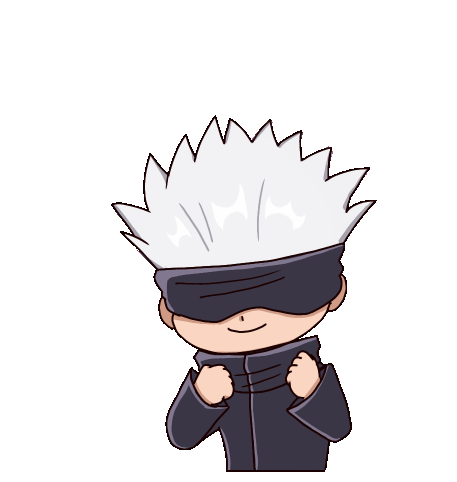
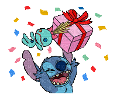

Słodziaka i przyszłej pani profesor nauk informatycznych ✨

od "ego topka" 💖
Otwórz prezent
kliknij, klik, klik, klik ✨
✨💖✨
💖
Puzzle maści wszelakiej 🧩
Happy Birthday Słodziak 💕
Ruchy0
Czas00:00
Ułożone0 / 25
Poziom trudności
Układanie puzzli…
Strefa robocza — odłóż kilka klocków i łącz pasujące fragmenty
Luźne elementy — przewijaj, jeśli jest ich dużo
Rama 0/0 · Góra 0/0 · Centrum 0/0
🧩 Puzzle ukończone

Ślicznie!
Stich jest dumny 💙✨
Czas00:00
Ruchy0
Poziom0
Instrukcja układania
Jak działa ta układanka?
To nadal klasyczne puzzle: przeciągasz klocek, obracasz go i szukasz właściwego miejsca.
Dodatkowe narzędzia pomagają ogarnąć większe poziomy bez zdradzania rozwiązania.
Tacka
To główny magazyn luźnych puzzli. W panelu po prawej możesz ją filtrować po rogach,
krawędziach, środku i regionach obrazka, żeby przy setkach klocków nie szukać wszystkiego naraz.
Strefa robocza
To mały blat między planszą a tacką. Odkładaj tam kilka podejrzanych klocków,
ustawiaj je obok siebie i buduj fragmenty, zanim przeniesiesz je na planszę.
Region
Region oznacza przybliżony obszar obrazka: góra, dół, lewo, prawo albo centrum.
Filtr regionu nie pokazuje miejsca docelowego, tylko zawęża liczbę widocznych klocków.
Tryb skupienia
Zwija głównie panel boczny i rozciąga planszę oraz tackę. Dodatkowy pływający blok (filtry, obroty,
dźwięk, wyjście z trybu chowania) ustawisz przyciskami Schowaj i Opcje.
Stan Schowaj ukrywa także wybór poziomu trudności,
rząd Zmień zdjęcie / eksport oraz Zapis / Wczytaj.
Na szerokiej stronie przyciski Schowaj/Opcje siedzą zwykle w prawym górnym rogu gry.
Poziom pomocy
„Ciepło-zimno” podświetla trzymany klocek i obrys planszy, gdy jest blisko dobrego pola —
żeby było widać, czy warto puszczać przyczep.
Żółty / złoty:
dobry poziom i pozycja, ale zły obrót — na komputerze: R albo prawy przycisk myszy
(+90° — tak jak po R); na telefonie wybrany już klocek stuknij drugi raz krótko, żeby obrócić.
Jak trafisz na zielono, można puszczać klocek.
Zielony:
wszystko gra: jesteś przy właściwym polu i klocek jest ustawiony tak, że przy puszczeniu
przyczepi się automatycznie.
„Minimalnie” zostawia tylko przyczepianie (snap), dźwięki i brak żółto-zielonych podpowiedzi
przy szukaniu miejsca.
Łączenie fragmentów
Klocki z rotacją 0° mogą połączyć się w tackce lub strefie roboczej, jeśli są sąsiadami
i ustawisz je blisko prawdziwego dopasowania krawędzi. Potem przeciągasz je jako grupę.
Szybkie zasady
Przeciągnij klocek z tacki, strefy roboczej albo planszy.
Na komputerze obracasz R albo prawym przyciskiem myszy.
Na małym ekranie pierwszym krótkim dotknięciem wybierasz klocek, drugim na ten sam klocek
obracasz o 90°.
Luźny klocek możesz zostawić na planszy, a poprawny zatrzaśnie się automatycznie.
Przy układance 10×10 i większej: na telefonie przytrzymanie pokazuje większy podgląd klocka; na szerokiej stronie też przy najechaniu myszką.
Zapis postępu zapamiętuje planszę, strefę roboczą i połączone fragmenty.